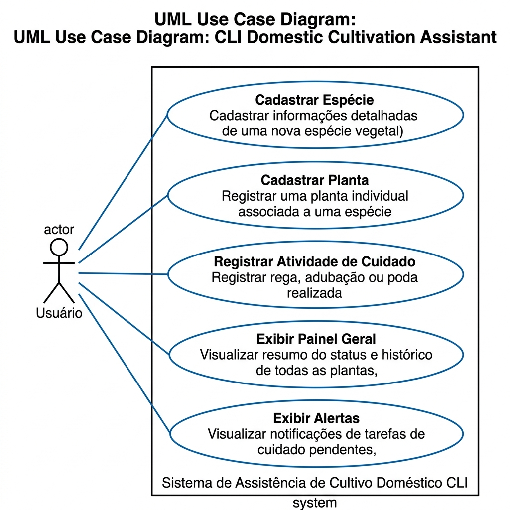
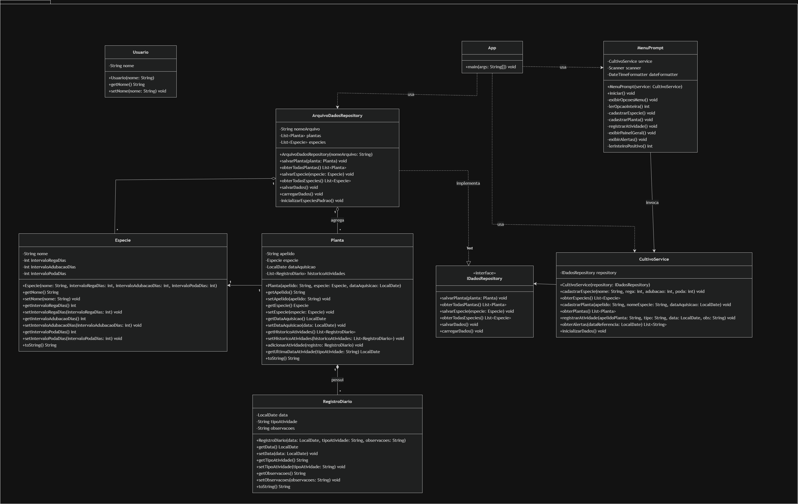
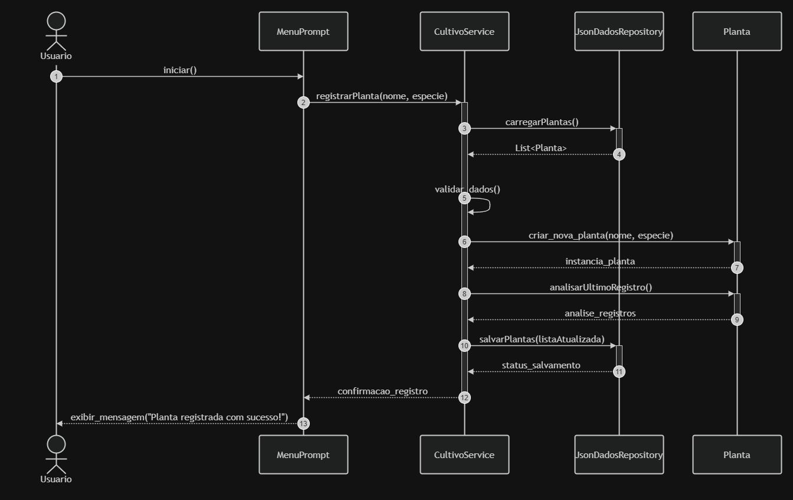

Assistente de Cultivo Doméstico
Sistema interativo via linha de comando para gestão e automatização de alertas de cuidados botânicos.
2.1 Processo de Software & Organização
Adotamos um ciclo iterativo e incremental com o uso operacional do Scrum.
- Sprints de 1 semana: Entregas rápidas de incrementos funcionais (modo CLI).
- Daily Scrum (15 min): Alinhamento diário rápido para resolver bloqueios técnicos e planejar o dia.
- Sprint Planning & Review: Definição de prioridades de backlog e retrospectiva crítica.
- Product Owner (Damares): Gerenciamento do backlog de requisitos biológicos e regras de negócio.
- Scrum Master (Talles): Facilitação do processo ágil, remoção de impedimentos e ritmo da equipe.
- Time de Desenvolvimento (Todos): Design estrutural, modelagem de diagramas UML, codificação Java e implementação de testes unitários.
2.2 Requisitos de Software
- RF1: Menu principal interativo via console.
- RF2: Cadastro de plantas com apelido, espécie e aquisição.
- RF3: Banco de dados local de regas e podas por espécies.
- RF4: Cálculo e exibição automática de alertas pendentes no início do app.
- RF5: Registro manual de atividades no diário de cultivo.
- RF6: Exibição de tabela com o estado geral de saúde de todo o jardim.
- RNF1 (Usabilidade): CLI amigável, validação de tipos de dados e tratamento completo de erros de digitação (evitando falhas e travamentos).
- RNF2 (Desempenho): Tempo de processamento e cálculo de alertas menor que 1 segundo.
- RNF3 (Portabilidade): Independente de SO, executável em Linux, Windows ou macOS via JVM.
2.3 Modelos UML Obrigatórios



2.4 Princípios & Propriedades
Classes altamente focadas. MenuPrompt cuida de I/O, Planta de dados. Acoplamento reduzido via interface IDadosRepository, isolando a regras de negócio da persistência real de disco.
SRP: Separação estrita de interface CLI, persistência e motor biológico.
DIP: O serviço de cultivo depende da abstração de interface, facilitando o uso de Mocks em testes.
Composição over Herança: A planta possui composição dinâmica de Especie em vez de hierarquia rígida.
Lei de Demeter: Restrição a interações diretas.
2.5 Estratégia de Testes & Mocks
- MotorRegaTest: Valida algoritmos de calendário de irrigação (cálculos de regas atrasadas, hoje, e agendamentos).
- ValidacaoEntradaTest: Garante que restrições críticas (como cadastro de apelidos duplicados, espécies inexistentes ou operações inválidas) lancem exceções controladas.
- RepositorioDadosMock: Simula a persistência em memória RAM de forma volátil durante a execução dos testes. Elimina dependência física com o arquivo dados.txt no disco.
- EmissaoAlertasMock: Intercepta e simula mensagens de atenção do console sem gerar I/O real em stdout, mantendo testes automatizados rápidos e limpos.
Demonstração de Testes & Execução
A suite de testes é executada via Gradle, isolando lógica e atestando que todas as classes compilam e respondem conforme as especificações:
Calculating task graph...
> Task :app:compileJava
> Task :app:compileTestJava
> Task :app:test
BUILD SUCCESSFUL in 12s
3 actionable tasks: 3 executed
Teste rodado com mocks em memória volátil, garantindo isolamento completo de persistência física externa.
Para executar e validar a aplicação interativa via linha de comando localmente:
.\gradlew run
- Insira novas espécies com intervalos ideais personalizados.
- Registre plantas e veja os alertas atualizarem na hora!
- Confira o histórico formatado na tabela do Painel Geral.
Obrigado!
O Assistente de Cultivo Doméstico reúne processos ágeis, engenharia de requisitos, design patterns, encapsulamento e qualidade de software garantida por testes.